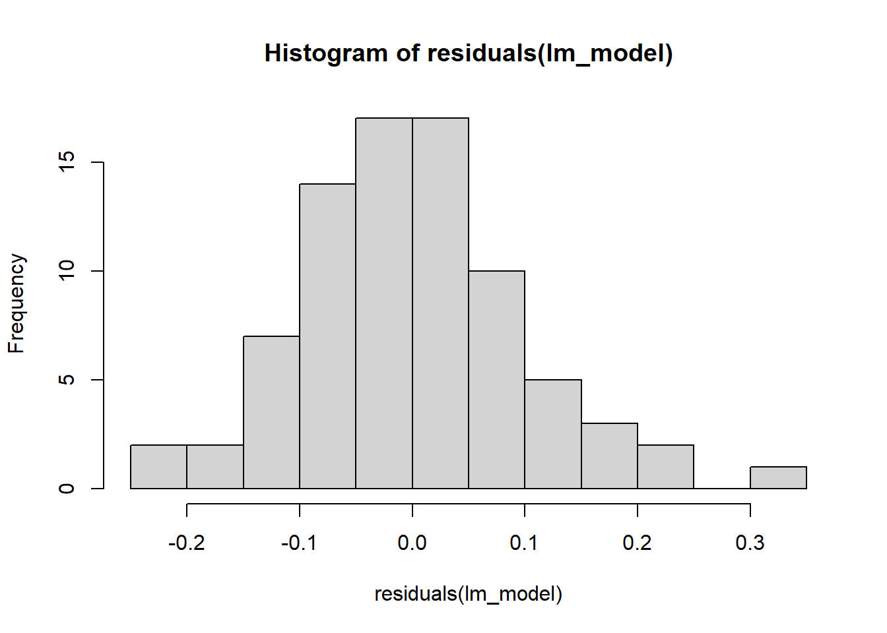
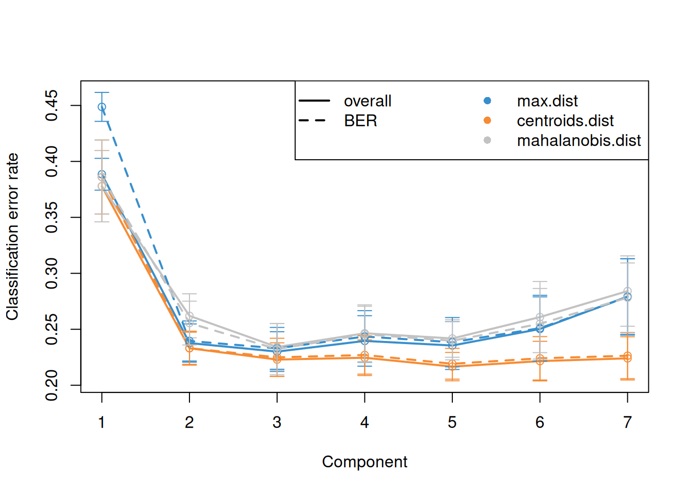

Section 3 Finding peaks discriminating callow and mature F. sanguinea workers
The procedure applied to identify species markers can also be applied to determine peaks characteristic of F. sanguinea callow ants. In discriminant analysis, we include two more groups: adult F. sanguinea and adult F. fusca as contrasts against which the callow features are extracted.
# devtools::install_github("mixOmicsTeam/mixOmics", ref = "143d31f9629bc83f1f27272ba6b7a2aaef0ee0e8")
suppressMessages({
library(sangchem)
library(dplyr)
library(mixOmics)
})
# load data
data("development_data")
data("mass_spectra_data")
DA_data <- dplyr::filter(development_data, caste=="worker", !remarks %in% c("aggression actor", "aggression target", "queenless colony")) %>%
dplyr::select(colony, species, callow, census_date, chromatogram_ID, sang_prop) %>%
split(list(.$colony, .$census_date), drop=TRUE) %>%
lapply(function(x){if(sum(x$callow)==0) return(NULL); x}) %>%
{function(x) x[!unlist((lapply(x, is.null)))]}() %>%
purrr::map2(seq_along(.), function(x,y){x$group <- y; x}) %>%
{function(x) do.call(rbind, x)}()
Y <- (DA_data$callow==1) + (DA_data$species=="F. sanguinea")
peak_prop <- peak_proportions_table(mass_spectra_data[mass_spectra_data$chromatogram_ID %in% DA_data$chromatogram_ID,])
peak_prop <- peak_prop[match(DA_data$chromatogram_ID, rownames(peak_prop)),]
# remove absent peaks
peak_prop <- peak_prop[,apply(peak_prop,2,function(x) sum(x)>0)]
peak_prop <- freq_abun_QC(peak_prop, freq_cutoff = 0.3, abundance_cutoff = 0.005)
# replace zeros with a small number before transformation
peak_prop[peak_prop==0] <- 10^-16
# apply central log ratio transformation
peak_transformed <- t(apply(peak_prop, 1, clr_transformation))
PCA_callow_discr <- prcomp(peak_transformed, scale. = TRUE)
# PCA_callow_discr$x <- withinVariation(PCA_callow_discr$x, data.frame(DA_data$group))set.seed(1342)
discr_analysis_callow <- splsda(PCA_callow_discr$x, Y=Y ,multilevel=DA_data$group,
ncomp=7, scale = FALSE)## Splitting the variation for 1 level factor.
perf.discr_analysis_callow <- perf(discr_analysis_callow,
validation = "Mfold",
folds = 4,
progressBar = FALSE,
auc = TRUE,
nrepeat = 30,
scale = FALSE)## Splitting the variation for 1 level factor.
selected_n <- perf.discr_analysis_callow$choice.ncom["overall", "max.dist"]
discr_analysis_callows_tuned <- tune.splsda(PCA_callow_discr$x,
Y=Y,
nrepeat = 30,
folds = 4,
ncomp = selected_n,
test.keepX = seq(1:dim(PCA_callow_discr$x)[2]),
dist = 'max.dist',
validation = 'Mfold',
measure = "BER",
progressBar = FALSE,
scale = FALSE)
selected_n <- discr_analysis_callows_tuned$choice.ncomp$ncomp
discr_analysis_callows_res <- splsda(PCA_callow_discr$x,Y=Y,
multilevel= DA_data$group,
keepX=discr_analysis_callows_tuned$choice.keepX,
ncomp=selected_n,
scale = FALSE)## Splitting the variation for 1 level factor.
Now we are ready to determine the marker peaks. To do so, we will calculate the effect of each peak on the final classification. We generate input matrix populated with all ones and then we increment input for one peak at a time.
3.1 Determining callow markers
ones_matrix <- matrix(1, nrow = ncol(peak_prop),ncol= ncol(peak_prop))
colnames(ones_matrix) <- rownames(ones_matrix) <- colnames(peak_prop)
unit_input <- diag(rep(1, ncol(peak_prop)))
incremented_matrix <- ones_matrix + unit_input
ones_matrix <- ones_matrix[1,,drop=FALSE]
ones_matrix <- ones_matrix/ncol(ones_matrix)
incremented_matrix <- apply(incremented_matrix, 2, function(x) x/sum(x))
res1 <- calculate_SII(incremented_matrix, discr_analysis_callows_res, PCA_callow_discr, predicted_category=3)
res2 <- calculate_SII(ones_matrix, discr_analysis_callows_res, PCA_callow_discr, predicted_category=3)
res <- res1
res$predicted_callow = res1$predicted_species - res2$predicted_species
res <- res[order(res$predicted_callow),]
colnames(res)[1] <- "peak_ID"
compounds <- c()
for(peak in res$peak_ID){
compounds <- c(compounds, mass_spectra_data[mass_spectra_data$peak_ID==peak,"identification"][1])
}
res$compounds = compounds
res <- res[,c("peak_ID", "compounds", "predicted_callow")]
print(res)## peak_ID compounds predicted_callow
## 90 90 C31 -4.176758e-03
## 47 47 C27 -3.644213e-03
## 107 107 x-Me-C32 -2.996286e-03
## 109 109 11,21-; 11,19-diMeC33 -2.453130e-03
## 42 42 7,x-; 5,x-; 10,14-diMeC26 -2.154991e-03
## 57 57 C28 + 3,15-diMeC27 -2.096849e-03
## 30 30 5-MeC25 -1.908213e-03
## 102 102 13,17-DiMe_C32 + x,y-DiMe_C32 -1.879667e-03
## 35 35 C26 -1.798579e-03
## 81 81 C30 -1.759903e-03
## 24 24 C25 -1.560792e-03
## 14 14 C24 -1.441398e-03
## 54 54 9,13-diMeC27 -1.343361e-03
## 77 77 7,11-; 7,13-; 7,15-diMeC29 -1.276609e-03
## 20 20 C25diene -1.214210e-03
## 94 94 11,19-; 11,17-; 11,15-diMeC31 -1.160522e-03
## 75 75 11,17-diMeC29 -1.004791e-03
## 50 50 7-MeC27 -9.946155e-04
## 108 108 x-Me_C32 -9.598826e-04
## 95 95 13,19-;13,17-diMeC31 -9.547021e-04
## 55 55 7,11-diMeC27 -8.175650e-04
## 9 9 7-Me-C23 -7.244626e-04
## 101 101 x-Me_C32 -7.128276e-04
## 5 5 C23-ene -5.968874e-04
## 106 106 C33ene -3.988080e-04
## 68 68 C29 -2.967333e-04
## 52 52 11,15-diMeC27 -2.453111e-04
## 76 76 13,17-diMeC29 -1.677779e-04
## 53 53 9,17-; 9,15-diMeC27 -8.284409e-05
## 83 83 14-; 13-; 12-; 11-MeC30 -5.049031e-05
## 85 85 (di)MeC30 (mix) -1.852181e-05
## 41 41 10,16-; 10,14-diMeC26 7.503280e-05
## 21 21 C25-ene 9.533250e-05
## 15 15 3,13-; 3,11-; 3,9-; 3,7-diMeC23 1.317833e-04
## 31 31 11,15-; 9,13-diMeC25 1.972200e-04
## 23 23 4,12-diMeC24 1.989938e-04
## 63 63 8,12,16-triMeC28 2.959724e-04
## 7 7 C23 4.989535e-04
## 28 28 9-MeC25 6.466871e-04
## 56 56 C28ene 8.352842e-04
## 58 58 3,9-; 3,7-diMeC27 9.493088e-04
## 92 92 15-; 13-; 11-; 9-MeC31 9.556574e-04
## 59 59 14-; 12-; 10-MeC28 1.314749e-03
## 8 8 11-Me-C23 + 9-Me-C23 1.364755e-03
## 36 36 3,13-diMeC25 1.491426e-03
## 51 51 5-MeC27 1.535366e-03
## 27 27 13-; 11-; 9-MeC25 1.900485e-03
## 32 32 7,11-diMeC25 + 3-MeC25 1.937633e-03
## 16 16 12-; 11-; 10-; 9-; 8-MeC24 2.342741e-03
## 12 12 3-MeC23 2.380647e-03
## 29 29 7-MeC25 2.442819e-03
## 43 43 C27-ene + 6,12-diMeC26 2.685604e-03
## 33 33 5,13-diMeC25 2.730338e-03
## 49 49 13-MeC27 3.025986e-03
## 71 71 15-; 13-; 11-; 9-; 7-MeC29 3.276396e-03
## 88 88 C31ene; 3-MeC30 3.628812e-03
## 37 37 14-; 10-MeC26 + 3,7,11-triMeC25 3.953716e-033.2 Determining mature F. sanguinea markers
res1 <- calculate_SII(incremented_matrix, discr_analysis_callows_res, PCA_callow_discr, predicted_category=2)
res2 <- calculate_SII(ones_matrix, discr_analysis_callows_res, PCA_callow_discr, predicted_category=2)
res <- res1
res$predicted_mature = res1$predicted_species - res2$predicted_species
res <- res[order(res$predicted_mature),]
colnames(res)[1] <- "peak_ID"
compounds <- c()
for(peak in res$peak_ID){
compounds <- c(compounds, mass_spectra_data[mass_spectra_data$peak_ID==peak,"identification"][1])
}
res$compounds = compounds
res <- res[,c("peak_ID", "compounds", "predicted_mature")]
print(res)## peak_ID compounds predicted_mature
## 27 27 13-; 11-; 9-MeC25 -4.630592e-03
## 24 24 C25 -4.298186e-03
## 7 7 C23 -4.241086e-03
## 37 37 14-; 10-MeC26 + 3,7,11-triMeC25 -4.086033e-03
## 33 33 5,13-diMeC25 -3.127918e-03
## 14 14 C24 -3.011136e-03
## 29 29 7-MeC25 -2.979645e-03
## 49 49 13-MeC27 -2.837882e-03
## 16 16 12-; 11-; 10-; 9-; 8-MeC24 -2.746400e-03
## 47 47 C27 -1.968251e-03
## 68 68 C29 -1.715222e-03
## 88 88 C31ene; 3-MeC30 -8.925516e-04
## 8 8 11-Me-C23 + 9-Me-C23 -8.508251e-04
## 59 59 14-; 12-; 10-MeC28 -7.918073e-04
## 32 32 7,11-diMeC25 + 3-MeC25 -6.409409e-04
## 12 12 3-MeC23 -6.381031e-04
## 42 42 7,x-; 5,x-; 10,14-diMeC26 -4.694611e-04
## 50 50 7-MeC27 -4.397482e-04
## 71 71 15-; 13-; 11-; 9-; 7-MeC29 -3.787476e-04
## 58 58 3,9-; 3,7-diMeC27 -2.439670e-04
## 35 35 C26 -2.132970e-04
## 5 5 C23-ene -2.125015e-04
## 23 23 4,12-diMeC24 -1.946405e-04
## 20 20 C25diene -1.152730e-04
## 36 36 3,13-diMeC25 6.359215e-05
## 55 55 7,11-diMeC27 1.131212e-04
## 53 53 9,17-; 9,15-diMeC27 1.331816e-04
## 31 31 11,15-; 9,13-diMeC25 2.838399e-04
## 15 15 3,13-; 3,11-; 3,9-; 3,7-diMeC23 5.114588e-04
## 81 81 C30 5.269252e-04
## 90 90 C31 5.647347e-04
## 41 41 10,16-; 10,14-diMeC26 6.457722e-04
## 54 54 9,13-diMeC27 6.851578e-04
## 51 51 5-MeC27 6.892040e-04
## 9 9 7-Me-C23 6.982416e-04
## 75 75 11,17-diMeC29 8.321318e-04
## 95 95 13,19-;13,17-diMeC31 8.695486e-04
## 28 28 9-MeC25 9.719607e-04
## 43 43 C27-ene + 6,12-diMeC26 1.109604e-03
## 107 107 x-Me-C32 1.146924e-03
## 57 57 C28 + 3,15-diMeC27 1.217216e-03
## 63 63 8,12,16-triMeC28 1.339269e-03
## 77 77 7,11-; 7,13-; 7,15-diMeC29 1.382436e-03
## 92 92 15-; 13-; 11-; 9-MeC31 1.479893e-03
## 101 101 x-Me_C32 1.579146e-03
## 76 76 13,17-diMeC29 1.585707e-03
## 108 108 x-Me_C32 1.708720e-03
## 21 21 C25-ene 1.712557e-03
## 56 56 C28ene 1.719906e-03
## 106 106 C33ene 1.728220e-03
## 85 85 (di)MeC30 (mix) 1.740352e-03
## 83 83 14-; 13-; 12-; 11-MeC30 1.824097e-03
## 52 52 11,15-diMeC27 1.831438e-03
## 94 94 11,19-; 11,17-; 11,15-diMeC31 1.892377e-03
## 109 109 11,21-; 11,19-diMeC33 2.518199e-03
## 30 30 5-MeC25 2.843934e-03
## 102 102 13,17-DiMe_C32 + x,y-DiMe_C32 3.775350e-03globals <- readRDS(system.file("globals.rds", package="sangchem"))
globals[["discr_analysis_callows_res"]] <- discr_analysis_callows_res
globals[["PCA_callow_discr"]] <- PCA_callow_discr
globals[["peaks_mature"]] <- as.numeric(peaks_mature)
globals[["peaks_mature"]] <- as.numeric(peaks_mature)
saveRDS(globals, system.file("globals.rds", package="sangchem"))3.3 Verifying the performace of the discrimination model
We will verify the performance the above model against the null ones which are trained using the data where age category of F. sanguinea ants has been shuffled.
# running basic model
set.seed(1342)
results_basic <- c()
while(length(results_basic)<1000){
message(counter)
.Random.seed <- results$random.seed
discr_analysis_callow <- splsda(PCA_callow_discr$x, Y=Y ,
ncomp=7, scale = FALSE)
tryCatch({perf.discr_analysis_callow <- perf(discr_analysis_callow,
validation = "Mfold",
folds = 4,
progressBar = FALSE,
auc = TRUE,
nrepeat = 30,
scale = FALSE,
cpus=16)
selected_n <- perf.discr_analysis_callow$choice.ncom["overall", "max.dist"]
discr_analysis_callows_tuned <- tune.splsda(PCA_callow_discr$x,
Y=Y,
ncomp = selected_n,
test.keepX = seq(1:120),
validation = 'Mfold',
folds = 4,
nrepeat = 30,
dist = 'max.dist', # use max.dist measure
measure = "BER",
progressBar = FALSE,
scale = FALSE)
n_comp <- discr_analysis_callows_tuned$choice.ncomp$ncomp
if(is.null(n_comp)) n_comp <- 1
discr_analysis_callows_res <- splsda(PCA_callow_discr$x,Y=Y,
keepX=discr_analysis_callows_tuned$choice.keepX,
ncomp=n_comp,
scale = FALSE)
perf.discr_analysis_callows_res <- perf(discr_analysis_callows_res,
validation = "Mfold",
folds = 4,
progressBar = FALSE,
nrepeat = 1,
scale = FALSE,
cpus=16)
curve_data <- calculate_accuracy_metrics(perf.discr_analysis_callows_res$predict[[length(perf.discr_analysis_callows_res$predict)]][,3,1][Y>0], Y[Y>0]==2)
AUC <- calculate_AUC(curve_data$FPR, curve_data$TPR)
results_basic <- c(results_basic, AUC)},
error=function(cond) message(cond))
}
# running null models
set.seed(1342)
results_null <- c()
while(length(results_null)<1000){
# shuffle categories 1 (mature F. sanguinea) and 2 (callow F. sanguinea)
Y <- split(Y, DA_data$group) %>% lapply(function(x) {x[x>0]<-sample(x[x>0], length(x[x>0]));x}) %>% unlist()
discr_analysis_callow <- splsda(PCA_callow_discr$x, Y=Y ,
ncomp=7, scale = FALSE)
tryCatch({perf.discr_analysis_callow <- perf(discr_analysis_callow,
validation = "Mfold",
folds = 4,
progressBar = FALSE,
auc = TRUE,
nrepeat = 30,
scale = FALSE,
cpus=16)
selected_n <- perf.discr_analysis_callow$choice.ncom["overall", "max.dist"]
discr_analysis_callows_tuned <- tune.splsda(PCA_callow_discr$x,
Y=Y,
ncomp = selected_n,
test.keepX = seq(1:120),
validation = 'Mfold',
folds = 4,
nrepeat = 30,
dist = 'max.dist', # use max.dist measure
measure = "BER",
progressBar = FALSE,
scale = FALSE,
cpus=16)
n_comp <- discr_analysis_callows_tuned$choice.ncomp$ncomp
if(is.null(n_comp)) n_comp <- 1
discr_analysis_callows_res <- splsda(PCA_callow_discr$x,Y=Y,
keepX=discr_analysis_callows_tuned$choice.keepX,
ncomp=n_comp,
scale = FALSE)
perf.discr_analysis_callows_res <- perf(discr_analysis_callows_res,
validation = "Mfold",
folds = 4,
progressBar = FALSE,
nrepeat = 1,
scale = FALSE,
cpus=16)
curve_data <- calculate_accuracy_metrics(perf.discr_analysis_callows_res$predict[[length(perf.discr_analysis_callows_res$predict)]][,3,1][Y>0], Y[Y>0]==2)
AUC <- calculate_AUC(curve_data$FPR, curve_data$TPR)
results_null <- c(results_null, AUC)},
error=function(cond) message(cond))
}The p-value is calculated as proportion of differences with value equal to or less than zero.
summary(results_basic-results_null)
hist(results_basic-results_null, breaks=15, xlab = "Difference in AUROC",
main = "Basic vs. null models")## Number of cases in table: 1.717858
## Number of factors: 0 All differences are positive, so the p-value is less than 0.001 since we have 1000 values.
All differences are positive, so the p-value is less than 0.001 since we have 1000 values.